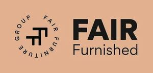

Trade Mark Journal No.2025/028 11 July 2025
WO0000001859530 (20,35,37,43)
Office of origin: Benelux Office for Intellectual Property (BOIP)
Date of International Registration:4 December 2024
Date of designation in the UK:
4 December 2024

The mark contains the colour beige.
- Class 20
- Furniture, office furniture, event furniture, patio furniture; furniture, mirrors, picture frames; raw or semi-worked bone, horn, baleen or mother-of-pearl; shells; meerschaum; yellow amber; containers, not of metal, for storage or transport.
- Class 35
- Marketing and business activities; business management; business administration; clerical services; commercial and business services in the context of wholesale trade, amongst others in the field of furniture, office furniture, event furniture, patio furniture, partition walls, floors, carpets, floor mats, linoleum and other floor coverings, lockers, safes, fencing and workplace furnishings; retail services connected with the sale of furniture, office furniture, event furniture, patio furniture, partition walls, flooring, carpets, floor mats, linoleum and other floor coverings, lockers, safes, fencing and workplace furnishings; rental of office equipment - machines and devices; organisation of fairs and exhibitions for commercial or advertising purposes; advice on sales and marketing for decoration of stands for trade fairs, exhibitions and other events; information, consultancy and advice on the aforementioned services, whether or not provided via the internet; rental of sales stands.
- Class 37
- Construction; repairs of tents, grandstands, fences, stages, decors, pavilions and stands, furniture, office furniture, event furniture, patio furniture, stalls, exhibition stands, sales stands, chairs, bar stools, tables, partition walls, floors, carpets, floor mats, linoleum and other floor coverings and of curtains, lockers, safes, fences and workplace furnishings; repairs of lamps, coat racks, mirrors, bins and other such event supplies such as lounge and exhibition furniture, parasols and refrigerators; installation of tents, grandstands, fences, stages, decors, pavilions and stands, furniture, office furniture, event furniture, terrace furniture, stalls, exhibition stands, sales stands, chairs, bar stools, tables, partition walls, floors, carpets, floor mats, linoleum and other floor coverings and of curtains, lockers, safes, fences and workplace furnishings; installation of lamps, coat racks, mirrors, bins and other such event supplies such as lounge and exhibition furniture, parasols and refrigerators; assembly and disassembly work; construction and dismantling of tents, stands, fences, stages, decors, pavilions and stands; maintenance, repair of furniture, carpets, floor coverings, fences and lockers; assembly of furniture; laying floors, carpets, floor mats, linoleum and other floor coverings and hanging curtains; stand, grandstand, set and stage construction; supervision (management) of activities relating to the aforementioned services; cleaning, cleaning and maintenance work; cleaning furniture, carpets, floor mats, linoleum, other floor coverings and curtains; disinfecting; troubleshooting technical faults (repair or replacement); advice on maintenance and repair of upholstery of stands for trade fairs, exhibitions and other events; information, consultancy and advice on the aforementioned services, whether or not provided via the Internet; advice on maintenance and repair of decoration of stands for trade fairs, exhibitions and other events.
- Class 43
- Rental of furniture, including exhibition furniture, patio furniture, chairs, bar stools, tables, office furniture and event furniture; rental of partition walls, floors, carpets, floor mats, linoleum and other floor coverings, fences, lamps, coat racks, mirrors, waste bins and other such event supplies, namely furniture, including patio, lounge and exhibition furniture, parasols; rental of mobile structures for events; carpet tile rental; rental of office furniture and other furniture; rental of office furnishings; providing and renting exhibition stalls and stands; consultancy and advice on the aforementioned services, whether or not provided via the Internet.
VDB Holding B.V.
Representative: Merkenbureau Knijff & Partners B.V., Leeuwenveldseweg 12, NL-1382 LX Weesp, NETHERLANDS